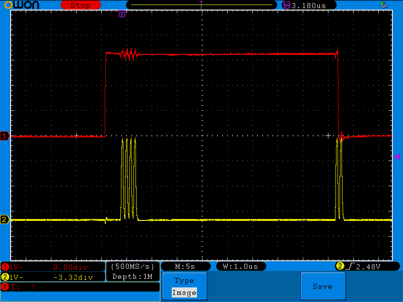
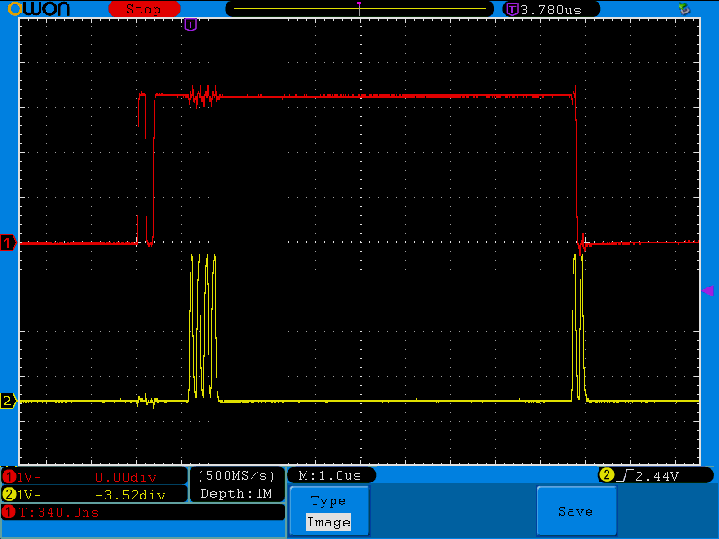
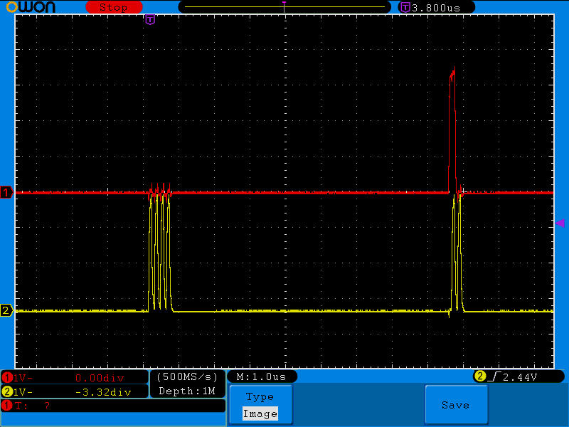
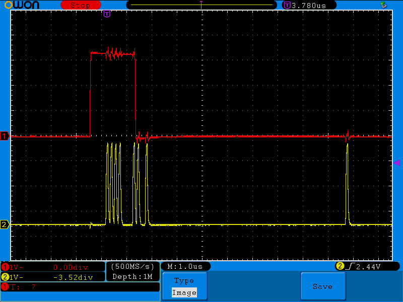

Firmware concerns for the Xilinx Platform Cable USB JTAG controller.
The following describes all understood messages in Xilinx's USB protocol for communicating with devices over JTAG.
This device uses Cypress EZ-USB chips, so it requires being flashed every time the device is powered on. The tool fxload will handle this, and you can easily set up UDEV rules in linux (or whatever other system your distribution uses) to automatically flash the device).
The firmware hex file for this device can be found inside the linux install of ISE. There are several files with the same name at various locations, but ignore them and use the one at {Latest ISE path}/ISE_DS/ISE/bin/lin/xusb_emb.hex. If you use the wrong file, it will either refuse to load, or appear to load but not re-enumerate properly and behave oddly despite the green light on the device lighting up.
When the device is plugged in it appears as idVendor:03fd, idProduct:000d. These values identify the device as not flashed.
Once the device is correctly flashed, it should automatically disconnect and reenumerate as idVendor:03fd, idProduct:0008. If it does not, something is wrong and the device will not work correctly:
Here is a simple udev rule set for dealing with the initialization of the device, as well as setting the permissions.
SUBSYSTEM=="usb", ACTION=="add", ATTR{idVendor}=="03fd", ATTR{idProduct}=="000d", MODE="666", RUN+="/sbin/fxload -v -t fx2 -I '/path/to/xusb_emb.hex' -D $tempnode"
SUBSYSTEM=="usb", ACTION=="add", ATTR{idVendor}=="03fd", ATTR{idProduct}=="0008", MODE="666"
Firmware Version Notes
Due to the fact that the firmware of the Platform Cable is loaded at run time, every time, it is very possible that Xilinx could change the entire protocol on a whim and make this entire document wrong for future versions of the firmware. I do not know if Xilinx will do this, but since it is an option, I will make the following note.
Known Supported Firmware Version: 1028 (0x0404)
If you want to check the version of firmware you have, you can run the following commands replacing $PATH_TO_FIRMWARE_FILE with your hex file's path.
FW_VERSION_STRING=`grep ":0219B900" $PATH_TO_FIRMWARE_FILE`;
FW_HEX_VERSION=${FW_VERSION_STRING:9:4};
printf "%d" 0x$FW_HEX_VERSION;
Protocol documentation for the Xilinx Platform Cable USB JTAG controller.
The xilinx PCU1 protocol uses a mixture of control and bulk messages for its operations. Control messages do one of three things
- Set a property (Enable the controller)
- Read a property (The state of the JTAG lines)
- Initialize a more complicated control message
All messages seen so far have a Request code of 0xb0, and the actual operation being performed is specified by the Value field. The protocol likes to send control messages with no data (length field = 0). It instead passes arguments in through the 16 bit index field of the first packet of the control message, saving one packet per such message.
Bulk messages are sent after the completion of a control message to set up the operation.
Data is only returned from bulk operations if the setting is enabled. There doesn't appear to be any per request way of specifying a return besides to send a control message enabling/disabling data return.
Note: For all the known operations, the Request field is 0xB0.
Note: The Request Type of control messages is one of the following, given the direction of the request (To controller = Out):
- OUT: 0x40
- IN: 0xC0
| Name | Dir | Value (cmd) | Index (param) | Length | Description |
|---|---|---|---|---|---|
| Device Enable | OUT | 0x18 | 0 | 0 | Required before the device will behave normally. Before running this command, you seem to still be able to read GPIO states, but and transfer commands will do nothing. |
| Device Disable | OUT | 0x10 | 0 | 0 | Not required, but you should clean up. |
| OUT | 0x28 | 0x12: ON |
0 | ||
| Read GPIO | IN | 0x38 | 0 | 1 | Has some side effects. Not sure completely what they are, but when run after enabling the device, it will cause the GPIO lines to change to a default value of some kind. It will then report that TDO and TMS are high. Calling it again will show that only TDO is high, as will further calls. This instruction is not well understood and the name largely comes from other reverse engineering efforts. |
| Bulk JTAG Transfer | OUT | 0xa6 | Number of bits to transfer minus 1 (0->1) | 0 | Starts a transfer |
| Bulk: OUT Endpoint: 2 The data to put on the GPIO lines. The data consists of sets of two bytes where each four bits are a field. Each bit of the fields line up so each two byte message communicates 4 actions. 0xABCD
TMS and TDI bits are relatively self explanatory and simply specify if those lines should be held low or high for the operation. The TDO field is used to tell the Platform Cable that the tdo line should be sampled during this operation. The Clock field is unique in that a 1 in a bit position signifies a full clock cycle and not just setting the state to low or high. If the clock field is 0b1111 There will be 4 full clock cycles (CLK: low->high then high->low). Consequently a 0 in the Clock field translates to no action on the CLK line for the operation. This approach effectively doubles the transfer rate since bits do not need to be wasted on lowering the clock, and we can send/receive up to 4 bits on TDI/TDO with TMS changes for every two bytes sent. The four operations specified by a two byte message are run from least significant bit to most significant bit. Sending more than one two byte message will cause the left most one (First part sent over the wire) to be executed first. Example 1:This example will move the TAP state through TEST_LOGIC_RESET and end in RUN_TEST_IDLE. Red is TMS. Yellow is TCK. Bits: 10Data: 0x80:00:f0:0f:10:03xpcu_GPIO_transfer(dh, 9, '\x80\x00\xf0\x0f\x10\x03')Disection (reading each column of the numbers lined up):0x80000xf00f0x1003TMS: 0x8, 0xf, 0x1 Bin = 1000 1111 0001 TDI: 0x0, 0x0, 0x0 (All 0 means TDI is always low. Ignoring for example.) TDO: 0x0, 0x0, 0x0 (All 0 means read no bits. Ignoring for example.) TXK: 0x0, 0xf, 0x3 Bin = 0000 1111 0011 Reverse each 4 bit section bin(hijk)->bin(kjih):TMS: 1000 1111 0001 -> 0001 1111 1000TXK: 0000 1111 0011 -> 0000 1111 1100  Example 2:Bits: 10Data: 0x00:00:f0:0f:10:03xpcu_GPIO_transfer(dh, 9, '\x00\x00\x00\x0f\x10\x03') Example 3:Bits: 10Data: 0x00:00:f0:0f:10:03xpcu_GPIO_transfer(dh, 9, '\x00\x00\x00\x0f\x10\x03') Example 4:Bits: 13Data: 0x00:00:f0:0f:10:03xpcu_GPIO_transfer(dh, 12, '\x80\x00\xf0\x0f\x10\x0b\x00\x01')Note: For two byte sections where all four state transitions are used, the Platform cable groups those bits and pushes any fractional section off a little while later (likely because of processing delay).  |
|||||
| Bulk: IN Endpoint: 6 This response message is returned from the Platform Cable after the transfer is completed if any read TDO bits were high in the request message. If no read TDO bits were high, this message is not returned. The returned data comes back in groups of two bytes. This means you will get a minimum of two bytes of response data if this message is returned. |
|||||